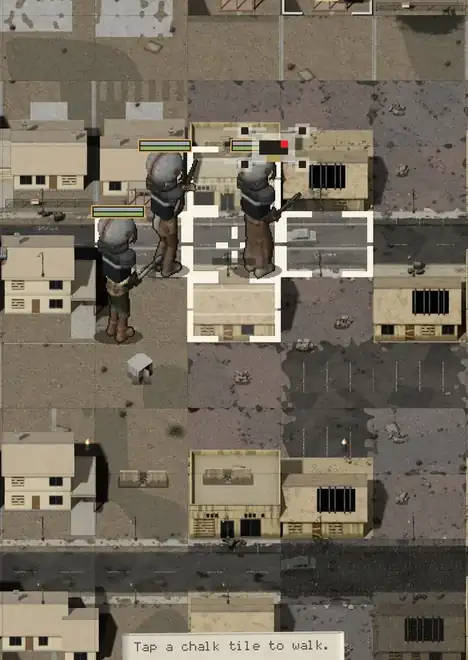
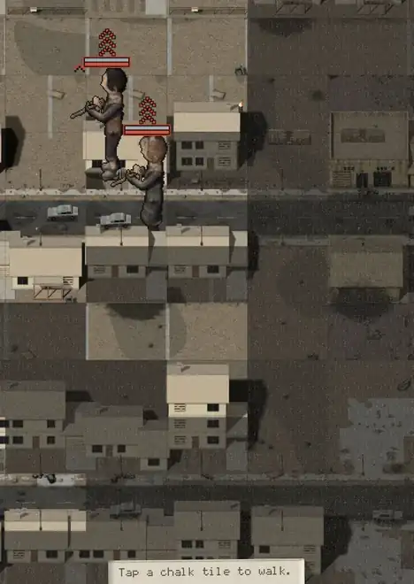

A new man for the casino's eye in the sky. He stays at the back and flies drones at you. Drop him and his drones fall.

His drone hangs over five lit tiles. Your man is standing on them: step off this turn or shoot it down.

The operator himself, at the back. He is soft: 70 health, a padded vest.
Two drones a fight. Then he pulls the pistol from his waistband.
In 6 fights: 16 drones flown, 6 shot down, 10 landed on empty ground because your men stepped off. In 6 more, one fell out of the air when he died while it flew.
Your men on AUTO stepped off every cross. A man who stays on it takes 80 to 110.
Your men killed him first in 3 of 6 fights. That is the point: find him.
His look is borrowed for now (the network gang's). The eye in the sky brings him from the middle of the game.